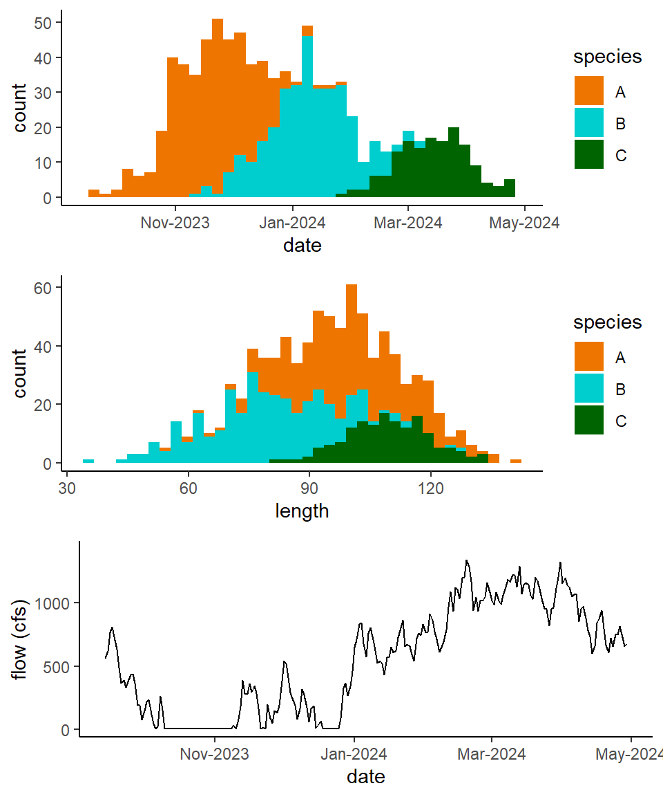

#create new simulated auxiliary length and date for species C.
#lengths
lengths_C <- rnorm(150, mean=110, sd=10)
#dates
dates_C <- round(rnorm(150,mean = as.numeric(as.Date("2024-03-15")), sd = 20))
#make dataframe
aux_dataC <- data.frame(
length = c(lengths_C),
date = round(as.Date(dates_C,origin = "1970-01-01")),
species = factor(rep("C", times=150))
)
#join in flow we created in last section
aux_dataC<-aux_dataC%>%
dplyr::left_join(flow_df,by="date")
aux_data<-aux_data%>%
rbind(aux_dataC)Multinomial Regression
Logistic regression for multiple species
We can expand our speciation model to incorporate more than two species using a “multinomial logistic regression”. We can estimate the probability that a given sonar fish image \(y\) is species \(k\) using the equation:
\[ P(y=k)=\frac{e^{\beta_{0,k}+\beta_{1,k}*x_{1,y}+\beta_{2,k}*x_{2,y}+...+\beta_{M,k}*x_{M,y}}}{1+\sum^{K-1}_{j=1}{e^{\beta_{0,k}+\beta_{1,k}*x_{1,y}+\beta_{2,k}*x_{2,y}+...+\beta_{M,k}*x_{M,y}}}} \tag{1}\]
Where \(K\) is the total number of different species \(k\) and \(M\) is the total number of explanatory variables. Similar to ?@eq-binom_reg, the above relies on regression coefficients associated with each explanatory variable and the \(k\)th outcome. Again with our example will utilize explanatory variables of date of observation, fish length (cm), water flow (cfs). We’ll generate a new set of auxiliary data, this time for three species. This simulated auxiliary data is for three species “A”, “B”, and “C”, which have some amount of overlap in their run timing and sizes.

Recall that the sonar_data we’ve been utilizing thus far is only for two species, so next we’ll add some data for a third species “C” into our set.
#Simulate some example sonar data
#lengths
lengths_C <- rnorm(300, mean=110, sd=10)
#dates
dates_C <- round(rnorm(300,mean = as.numeric(as.Date("2024-03-15")), sd = 20))
#make dataframe
sonar_dataC <- data.frame(
length = c(lengths_C),
date = round(as.Date(dates_C,origin = "1970-01-01"))
)
#join in flow we created in last section
sonar_dataC<-sonar_dataC%>%
dplyr::left_join(flow_df,by="date")
sonar_data<-sonar_data%>%
rbind(sonar_dataC)To predict species we can use a method similar to our binomial logistic regression but this time using the multinom() call from the nnet package to run a multinomial regression model. Again will begin by iteratively training and testing the model on our auxiliary data set to estimate the models accuracy.
suppressMessages(library(nnet))
# Split data into training and testing sets
set.seed(Sys.time()) #reset seed
iterations=100
results<-data.frame()
for(i in 1:iterations){
train_index <- createDataPartition(aux_data$species, p = 0.7, list = FALSE)
train_data <- aux_data[train_index, ]
test_data <- aux_data[-train_index, ]
#use multinom() call for multinomial regression
model_iter <- multinom(species ~ as.numeric(date) + length + Flow_cfs,
data = train_data)
test_data$species_predicted <- predict(model_iter, newdata = test_data)
accuracy <- sum(test_data$species_predicted ==
test_data$species)/nrow(test_data)
Ntrue_A<-sum(test_data$species=="A")
Ntrue_B<-sum(test_data$species=="B")
Ntrue_C<-sum(test_data$species=="C")
Nest_A<-sum(test_data$species_predicted=="A")
Nest_B<-sum(test_data$species_predicted=="B")
Nest_C<-sum(test_data$species_predicted=="C")
error_A <- abs(Nest_A - Ntrue_A)
error_B <- abs(Nest_B - Ntrue_B)
error_C <- abs(Nest_C - Ntrue_C)
rel_error_A <- error_A / Ntrue_A
rel_error_B <- error_B / Ntrue_B
rel_error_C <- error_C / Ntrue_C
MAPE <- mean(c(rel_error_A, rel_error_B, rel_error_C)) * 100
d<-data.frame("accuracy"=accuracy,"MAPE"=MAPE)
results<-results%>%rbind(d)
}Based on the above model training and iterative testing, we see our model predicted the species of our test data with an average accuracy of NA .
Next we’ll retrain our model using the entire auxiliary data set, and then use it to predict species of sonar_data2.
model_2<-multinom(species ~ as.numeric(date) + length + Flow_cfs,
data = aux_data)# weights: 15 (8 variable)
initial value 961.285753
iter 10 value 344.338039
iter 20 value 292.980004
iter 30 value 289.147517
iter 40 value 221.407353
iter 50 value 204.669897
iter 60 value 189.303481
iter 70 value 182.484081
iter 80 value 179.514460
iter 90 value 177.031194
iter 100 value 176.430255
final value 176.430255
stopped after 100 iterationssonar_data$species <- predict(model_2, newdata = sonar_data, type = "class")We can visualize our speciation results below, and see how they track with date and length.
`stat_bin()` using `bins = 30`. Pick better value with `binwidth`.
`stat_bin()` using `bins = 30`. Pick better value with `binwidth`.N_est4<-sonar_data%>%
group_by(species)%>%
tally()Our final estimates of abundance in this example are 1037for species A, 796 for species B, and 317 for species C.
Estimating uncertainty
Nothing fancy here, we can replicate our bootstrapping methods we used during for the logistic regression model just this time with our multinomial model.
#bootstrapping boogie
iterations<-100
results<-data.frame()
for(j in 1:iterations){
d <- sonar_data[sample(nrow(sonar_data), replace = TRUE), ]
p_classes <- predict(model_2, newdata = d, type = "class")
sonar_boot<-d%>%cbind(p_classes)
N_A<-length(which(sonar_boot$p_classes=="A"))
N_B<-length(which(sonar_boot$p_classes=="B"))
N_C<-length(which(sonar_boot$p_classes=="C"))
iter<-data.frame('iteration'=j,"A"=N_A[1],"B"=N_B[1],"C"=N_C[1])
results<-results%>%rbind(iter)
}
#iteration total estimates
iter_totals<-results%>%
group_by(iteration)%>%
dplyr::summarise(A=sum(A),
B=sum(B),
C=sum(C))
#bounds
A_stats <- quantile(iter_totals$A, probs = c(0.025, 0.975))
B_stats <- quantile(iter_totals$B, probs = c(0.025, 0.975))
C_stats <- quantile(iter_totals$C, probs = c(0.025, 0.975))The above results show that our estimate of total abundance of species A in our sonar counts is 1037 with 95% CI [999, 1089], a count of 796 with 95% CI [752, 840] for species B, and a count of 317 with 95% CI [285, 344] for species C.